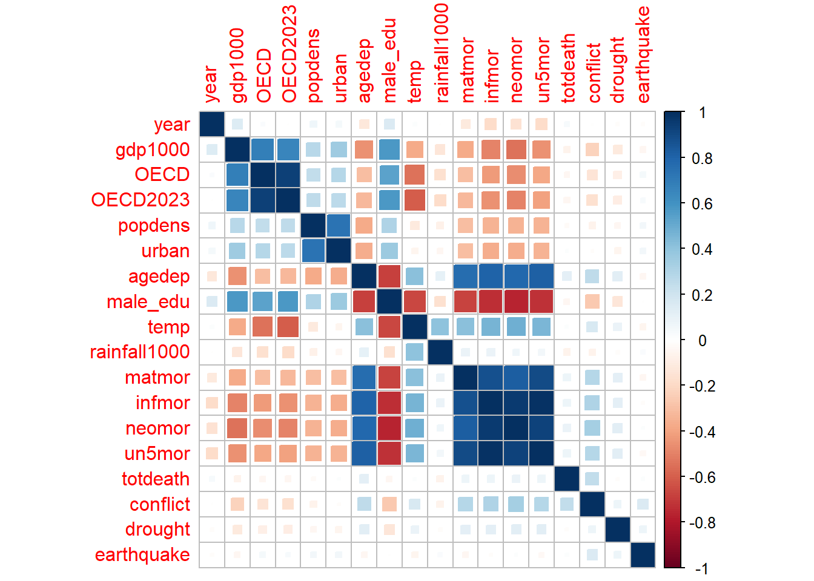
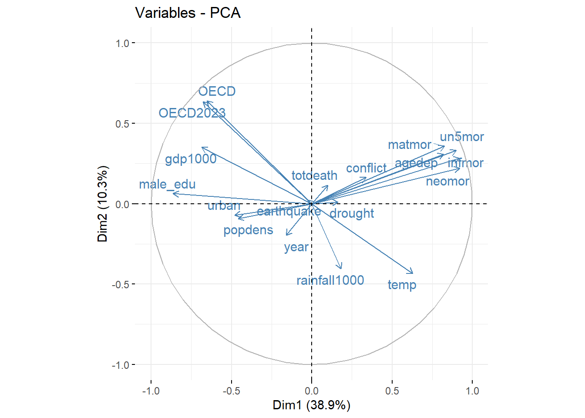
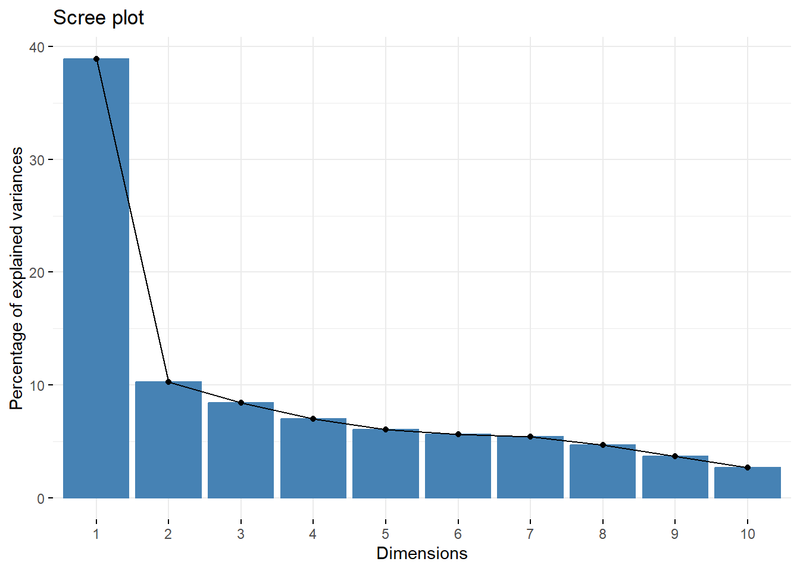

Exploratory Data Analysis on the Armed Conflict Dataset
Loading in libraries and reading in the final dataset
library(dplyr)
Attaching package: 'dplyr'
The following objects are masked from 'package:stats':
filter, lag
The following objects are masked from 'package:base':
intersect, setdiff, setequal, union
library(corrplot)
corrplot 0.94 loaded
library(FactoMineR)library(factoextra)
Loading required package: ggplot2
Welcome! Want to learn more? See two factoextra-related books at https://goo.gl/ve3WBa
library(here)
here() starts at C:/Users/victo/OneDrive/Documents/MSc Biostatistics - UofT/CHL 8010 - Statistical Programming and Computation for Health Data/Version Control/armed_conflict
# Read in the datadata <-read.csv(here("original","analytical", "finaldata.csv"),header=TRUE)# View first few rows of datasethead(data)
We will generate summary statistics of the data to see the general distribution of the data. We will also remove any rows with missing values.
# Summary statisticssummary(data)
country_name ISO region year
Length:3720 Length:3720 Length:3720 Min. :2000
Class :character Class :character Class :character 1st Qu.:2005
Mode :character Mode :character Mode :character Median :2010
Mean :2010
3rd Qu.:2014
Max. :2019
gdp1000 OECD OECD2023 popdens
Min. : 0.1105 Min. :0.000 Min. :0.0000 Min. : 0.00
1st Qu.: 1.2383 1st Qu.:0.000 1st Qu.:0.0000 1st Qu.:14.79
Median : 4.0719 Median :0.000 Median :0.0000 Median :27.52
Mean : 11.4917 Mean :0.171 Mean :0.1882 Mean :30.57
3rd Qu.: 13.1531 3rd Qu.:0.000 3rd Qu.:0.0000 3rd Qu.:40.72
Max. :123.6787 Max. :1.000 Max. :1.0000 Max. :99.86
NA's :62 NA's :20
urban agedep male_edu temp
Min. : 0.1025 Min. : 16.17 Min. : 1.067 Min. :-2.405
1st Qu.:17.2872 1st Qu.: 47.94 1st Qu.: 5.904 1st Qu.:12.928
Median :30.2535 Median : 55.51 Median : 8.368 Median :21.958
Mean :30.6948 Mean : 61.94 Mean : 8.258 Mean :19.625
3rd Qu.:41.6558 3rd Qu.: 77.11 3rd Qu.:10.849 3rd Qu.:25.869
Max. :93.4135 Max. :111.48 Max. :14.441 Max. :29.676
NA's :20 NA's :20 NA's :20
rainfall1000 matmor infmor neomor
Min. :0.01993 Min. : 2.0 Min. : 1.60 Min. : 0.80
1st Qu.:0.59146 1st Qu.: 17.0 1st Qu.: 7.60 1st Qu.: 4.90
Median :1.01288 Median : 66.0 Median : 18.90 Median :12.10
Mean :1.20216 Mean : 210.6 Mean : 28.90 Mean :16.18
3rd Qu.:1.68706 3rd Qu.: 299.8 3rd Qu.: 44.52 3rd Qu.:25.32
Max. :4.71081 Max. :2480.0 Max. :138.10 Max. :60.90
NA's :20 NA's :426 NA's :20 NA's :20
un5mor totdeath conflict drought
Min. : 2.00 Min. : 0.0 Min. :0.0000 Min. :0.00000
1st Qu.: 9.00 1st Qu.: 0.0 1st Qu.:0.0000 1st Qu.:0.00000
Median : 22.20 Median : 0.0 Median :0.0000 Median :0.00000
Mean : 40.50 Mean : 361.1 Mean :0.1892 Mean :0.08737
3rd Qu.: 61.33 3rd Qu.: 2.0 3rd Qu.:0.0000 3rd Qu.:0.00000
Max. :224.90 Max. :78644.0 Max. :1.0000 Max. :1.00000
NA's :20
earthquake
Min. :0.00000
1st Qu.:0.00000
Median :0.00000
Mean :0.08333
3rd Qu.:0.00000
Max. :1.00000
# Remove missing rowsclean_data <-na.omit(data)
A correlation matrix will be used to explore the relationships between numeric variables within the dataset. One observation is that there is a negative correlation between mortality and urbanization, which could be due to better healthcare infrastructure in urban areas.
# Produce a correlation matrix numeric_data <- clean_data %>%select_if(is.numeric)cor_matrix <-cor(numeric_data, use ="complete.obs")corrplot(cor_matrix, method ="square")

Performing PCA helps identify the most important components. A biplot allows us to observe how the original variables contirbute to the principal components and how the data points are distributed across the axes.
A scree plot can help visualize how much variability each component explains.
# PCA - Principal Component Analysis# Standardize the numeric data scaled_data <-scale(numeric_data)# Performing PCApca_result <-PCA(scaled_data, graph =FALSE)# Create a biplot with only arrows (variables)fviz_pca_var(pca_result, col.var ="steelblue", repel =TRUE, labelsize =4)

# Generate the scree plotfviz_eig(pca_result)

The biplot shows that the first two components, Dim1 and Dim2, explain almost 50% of the total variance in the data. Variables like matmor (maternal mortality), un5mor (under-5 mortality), and infmor (infant mortality) have strong contributions to Dim1.
From the scree plot, the first principal component (PC1) accounts for about 40% of the variance, and second principal component (PC2) explains 10% of the variance. The elbow shows that the first two components account for a significant portion of the variance.